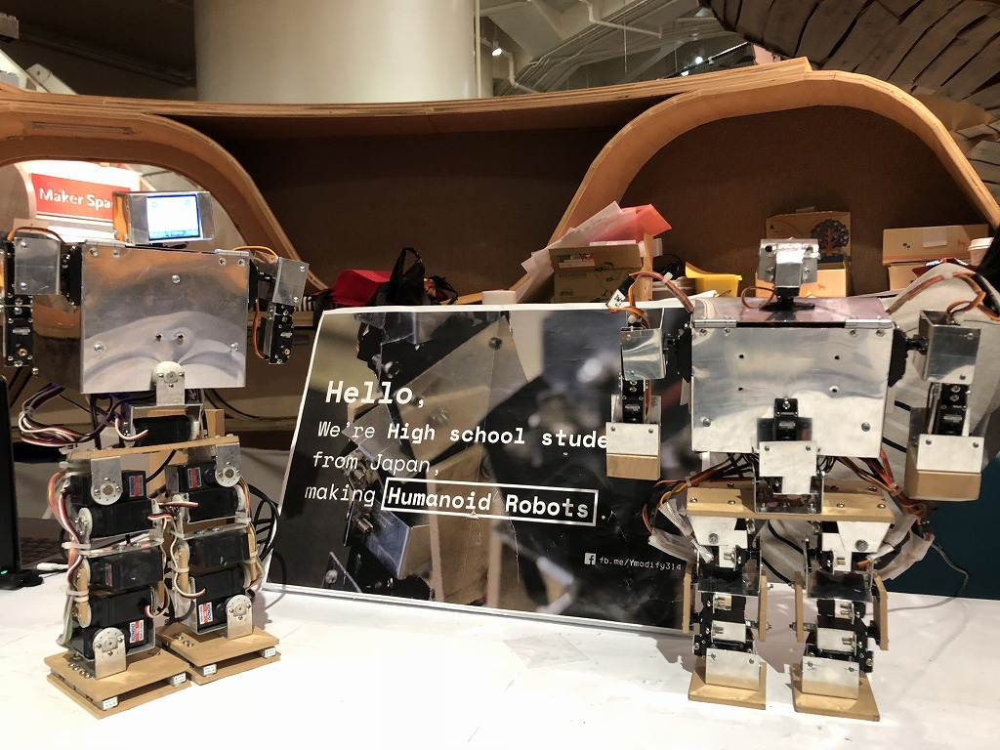
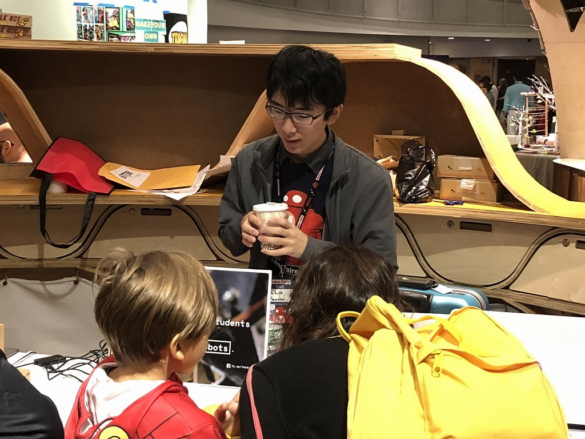

World Maker Faire New York 2018
YamaX (2018)
As Y-modify team, we exhibited YamaX.
We received Editor's Choice (Blue Ribbon).



Detail
Date: 2018/9/22-23
Place: New York Hall of Science
Exhibitor PageYamaX (2018)
As Y-modify team, we exhibited YamaX.
We received Editor's Choice (Blue Ribbon).
Date: 2018/9/22-23
Place: New York Hall of Science
Exhibitor Page